MM32-LINK Series InstructionsOverview / 简介Function / 功能DAPLINK Full Function / DAPLINK 全功能MM32LINK Series Function / MM32LINK 系列功能Hardware / 硬件MM32LINK-MINI SCH / 原理图MM32LINK-OB SCH / 原理图MM32LINK-MINI Pin-Assignment / 引脚分配图MM32LINK-OB Debug-In / 调试输入MM32LINK Series 指示灯状态Tutrial / 使用教程KEIL Configure / Keil 配置Keil - Connect Options / 连接选项Keil - Reset Options / 复位选项IAR Configure / IAR 配置IAR - Reset Option / 复位选项PyOCD Configure / PyOCD 配置准备工作安装 PyOCD安装目标芯片支持使用 PyOCD 烧写程序擦除目标芯片烧写目标芯片Firmware Upgrade / 固件升级Release Note / 更新日志MM32LINK-MINI Rev.230608MM32LINK-OB Rev.230630MSC Drag-N-Drop Download / U 盘拖拽下载Web Server / 网页服务SCH / 原理图Online BOM / 在线 BOMTarget MCU Data Sheet / 目标芯片数据手册Target MCU User Manual / 目标芯片用户手册Factory Firmware / 出厂固件Flash Program / Flash 编程Factory Reset / 恢复出厂MM32LINK-Utility / 实用工具FAQ / 常见问题插电脑上后没有驱动设备管理器有设备，但是 IDE 不识别烧录器连上了，但是KEIL设备列表里不显示被调试的板子无法识别虚拟U盘参考资料
MM32-LINK Series Instructions
Overview / 简介
MM32-LINK Series 基于 ARM 开源调试器方案 ARMmbed/DAPLink (开源地址) 。
【DAPLINK 官方简介】
Arm Mbed DAPLink is an open-source software project that enables programming and debugging application software on running on Arm Cortex CPUs. Commonly referred to as interface firmware, DAPLink runs on a secondary MCU that is attached to the SWD or JTAG port of the application MCU. This configuration is found on nearly all development boards. It creates a bridge between your development computer and the CPU debug access port.
The project is constantly under heavy development by Arm, its partners, numerous hardware vendors and the open-source community around the world. DAPLink has superseded the mbed CMSIS-DAP interface firmware project. You are free to use and contribute.
【译】
Arm Mbed DAPLink 是一个开源软件项目，可以在 Arm Cortex CPU 上运行编程和调试应用软件。DAPLink 的接口固件运行在调试器 MCU 上，该调试器 MCU 通过 SWD 或 JTAG 端口连接到调试目标 MCU。这种配置在几乎所有的板载调试器开发板上都可以找到，它能在您的开发计算机上与 CPU 调试访问端口之间建立桥接通道。
本项目不断受到 Arm及其合作伙伴、众多硬件供应商，还有全球开源社区的大力开发，DAPLink 已取代 mbed CMSIS-DAP 接口固件项目，用户可以自由使用和贡献。
Function / 功能
DAPLINK Full Function / DAPLINK 全功能
全系列 Arm-Cortex 内核芯片的调试和烧录，ARM 官方维护，后续新内核依然会支持
适配 DAPLINK V2 WINUSB 版本，速度对比 HID 版本提升 3 到 10 倍，极大地节约下载时间
USB 转串口（CDC），以 COM 端口形式出现在 Windows 机器上，或以 /dev/tty 接口形式出现在 Linux 机器上，或以 /dev/usbmodem 形式出现在 Mac OS 机器上
U 盘拖拽烧录功能，可以直接将 hex 或者 bin 文件拖拽到 U 盘实现烧录
支持 WEBUSB 功能，除火狐浏览器外，可以网页烧录固件，支持插入弹窗
支持 Keil MDK，IAR Workbench，PyOCD 等多种调试环境
MM32LINK Series Function / MM32LINK 系列功能
DAPLINK Full Function / DAPLINK 全功能
MM32LINK-Utility 原厂工具支持，可对 MainFlash 和 OptionByte 区域操作
支持 Keil IDE 对 MM32F0010、MM32G0001 等特殊芯片执行 Reset & Run 指令
支持 MM32F0010、MM32G0001等特殊芯片的变砖解锁，包含U盘拖拽、WebUSB、Utility工具解锁等多种方式
Hardware / 硬件
MM32LINK Series 主要分类
MM32LINK MINI
MM32LINK OB
MM32LINK MAX（已停止维护）
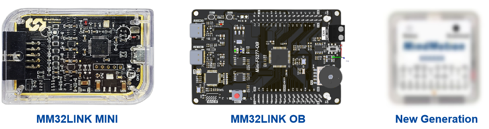
MM32LINK-MINI SCH / 原理图

MM32LINK-OB SCH / 原理图
本文以 MB100-MINI-F5277 为例，MM32-Board 板载 OB 后续系列将基本延续该型号设计。

MM32LINK-MINI Pin-Assignment / 引脚分配图
MM32LINK-MINI 随产品附赠一根 10P-to-20P 转接线：
| 引脚名称 | 出厂线缆颜色 | 描述 |
|---|---|---|
| TVCC | 红 | 目标板电源线。支持3.3V / 5V配置。默认输出 3.3V电平，若连接5V设备调试，须自行承担烧毁风险 |
| Vref | 橙 | 目标板电源反馈线，支持内部电平转化器短接至 TVCC |
| GND | 黑 | 电源地线 |
| SWCLK/TCK | 蓝 | SWD CLK时钟线 |
| SWDIO/TMS | 黄 | SWD IO数据线 |
| RESET | 灰 | 复位线。可接至目标芯片复位脚 |
| TXD | 绿 | 虚拟串口 TX 线。接至目标板接收端 |
| RXD | 白 | 虚拟串口 RX 线。接至目标板发送端 |
| SWO/TDO | 紫 | 串行Trace输出线 |
| TDI | ● | (注：MM32LINK-MINI 暂不支持) |
具体引脚的连接关系如下图所示，其中，Pin1 连接至 MM32LINK-MINI 调试器输出口，Pin2 连接至待调试目标板 JTAG-20P 连接口。
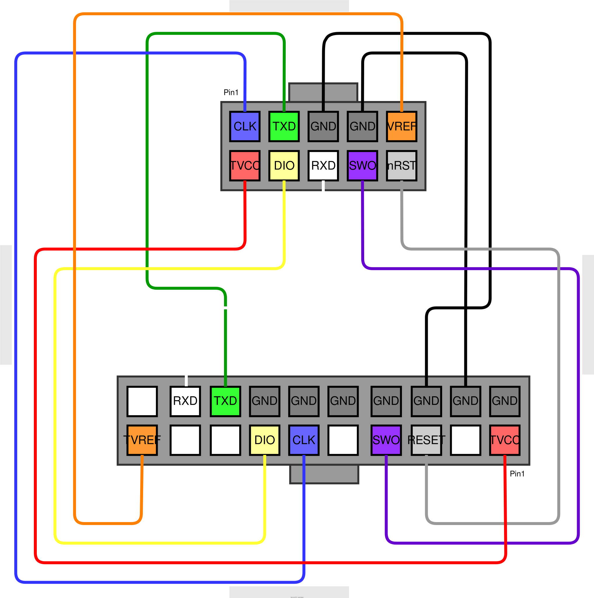
MM32LINK-OB Debug-In / 调试输入
MM32LINK-OB 板载开发板提供了外部调试器接入口，可供外部调试器对板载目标芯片进行调试。
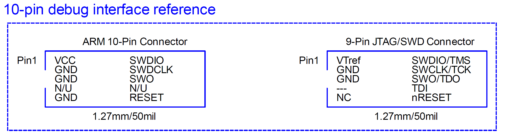
MM32LINK Series 指示灯状态
两颗（或 1x 双色） LED 功能分别为：
DAP 运行指示，常亮
-1688913541200-10.gif)
DEBUG 指示，烧录或调试时亮
.gif)
串口 CDC 指示，串口收发数据时快速闪烁
.gif)
MSC U 盘烧录功能指示，发生数据读写时快速闪烁
Tutrial / 使用教程
KEIL Configure / Keil 配置
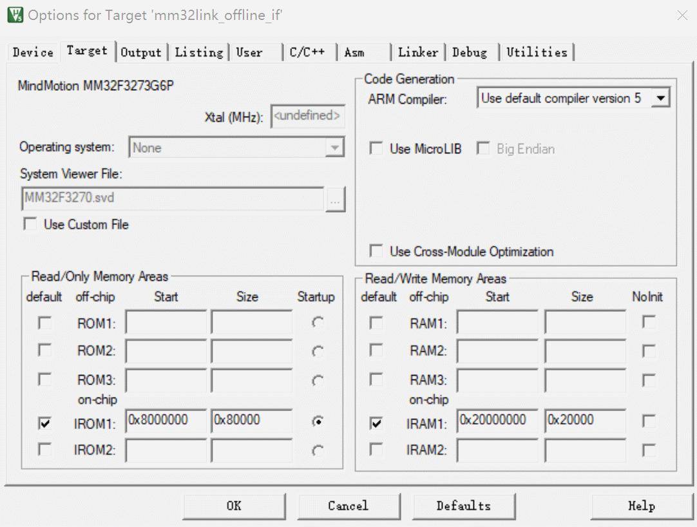
点击工程配置魔术棒，找到 Debug 选项卡，在下拉列表中选择 CMSIS-DAP Debugger，点击 Settings
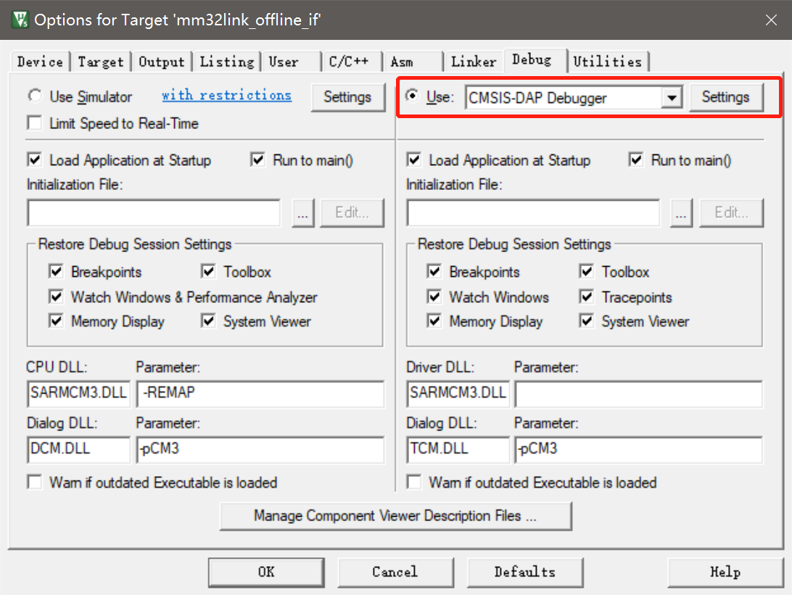
查看设备是否连接正常，连接正常可以在 SW Device 列表里看到设备，可以调整时钟速度提高效率
如果设备列表是空的，可能由于SW调试频率设置过高无法识别到目标芯片，可以调低频率后再使用
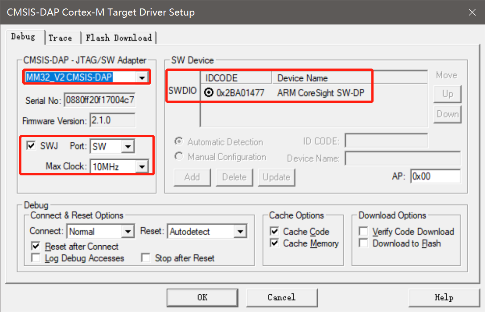
Keil - Connect Options / 连接选项
| Options | Function | 功能 |
|---|---|---|
| Normal | Stops the CPU at the currently executed instruction after connecting. | 在连接后将 CPU 停止在当前执行的指令上 |
| With Pre Reset | Hardware reset (HW RESET) before connecting to the device. | 在连接到设备之前使能硬件复位(HW RESET) |
| Under Reset | Holds the hardware reset(HWRESET) signal active while connecting to the device. Use this option when the user program disables the JTAG/SW interface by mistake | 在连接到设备时保持硬件复位 (HW RESET) 信号处于使能状态。当用户程序错误禁用 JTAG/SW 接口时，可以使用此选项（部分芯片不支持） |
| Without Stop | Connects to and disconnects from the target device without explicitly stopping the CPU. Use this option, for example, to inspect memory or peripheral SFRs. To use this Connect type properly, set all the following options: 1.Disable Reset after Connect 2.Disable Options for Target Debug- Load Application at Startup. | 连接到目标设备并断开与目标设备的连接，而不显式停止 CPU。例如使用此选项可检查内存或外围设备SFR。 要正确使用此连接类型，请设置以下所有选项: 1.连接后禁用复位 2.禁用目标-调试-启动时加载应用程序的选项 |
Keil - Reset Options / 复位选项
| Options | function | 功能 |
|---|---|---|
| VECTRESET | Performs a software reset by setting the VECTRESET bit. Only the Cortex-M core is reset. The on-chip peripherals are not affected. For some Cortex-M devices, VECTRESET is the only way to reset the core. VECTRESET is not supported on Cortex-M0 and Cortex-M1 cores. | 软件复位，通过 VECTRESET置位。仅复位Cortex-M内核，片上外设不会复位。 对于某些Cortex-M设备，VECTRESET是复位内核的唯一方法。(注：M0和M1内核不支持) |
| SYSRESETREQ | Performs a software reset by setting the SYSRESETREQ bit. The Cortex-M core and on-chip peripherals are reset. | 软件复位，通过 SYSRESETREQ置位。 Cortex-M内核和片上外设都被复位。 |
| HW RESET | Performs a hardware reset by asserting the hardware reset (HW RESET) signal. | 硬件复位，通过控制 nReset 信号线 |
| Autodetect | Selects one of the above reset methods based on the target device. The SYSRESETREQ method is used if an unknown device is detected. | 根据目标设备选择上述复位方法。如果检测到未知设备，则使用SYSRESETREQ方法。 |
IAR Configure / IAR 配置
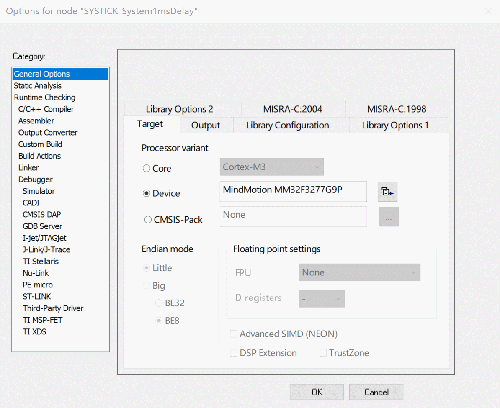
顶部菜单栏 Project 或者右击 Workspace 区域 Project，找到 Options ...（快捷键 Alt+F7），找到 Debugger 选项卡，从 Driver 列表中选中 CMSIS DAP
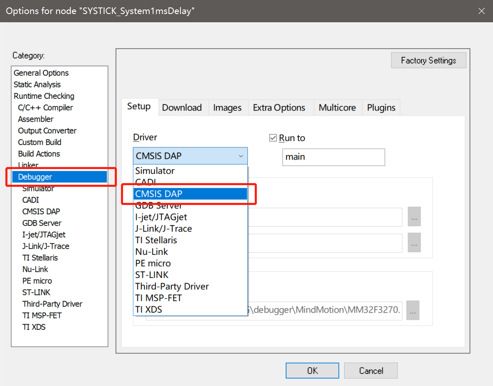
点击左侧 CMSIS DAP，进入设置。根据需要选择合适的复位方式、通信速率、调试探针。
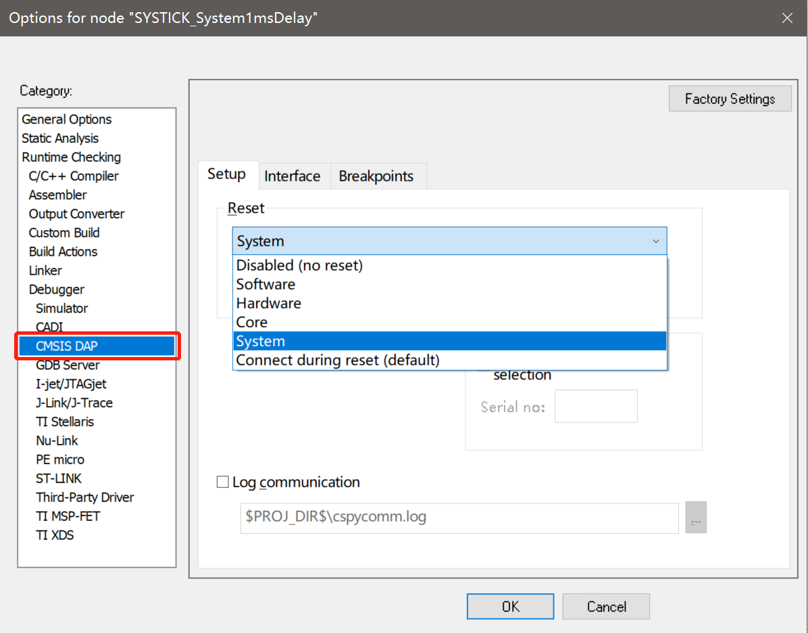
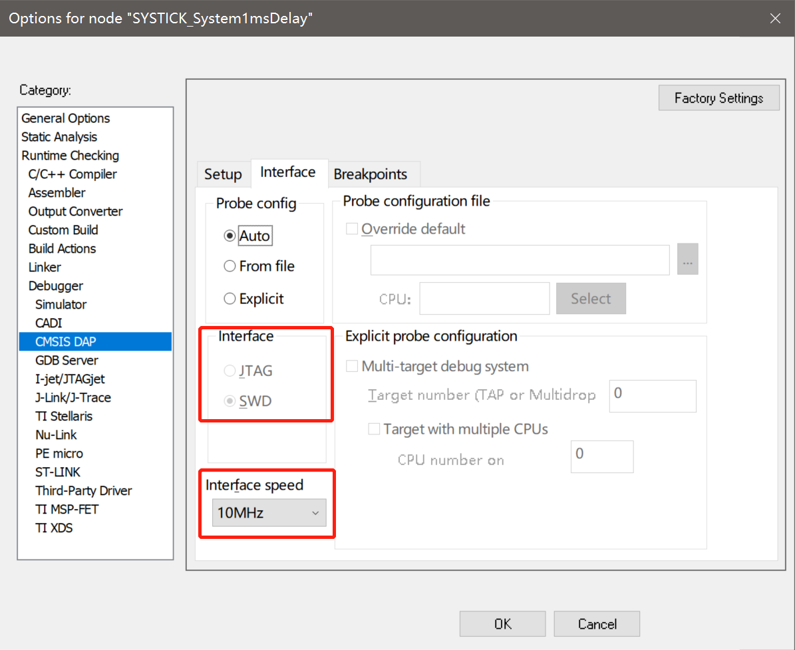
IAR - Reset Option / 复位选项
| Option | Function | 功能 |
|---|---|---|
| Disable (no reset) | No reset is performed. | 不执行复位操作。 |
| Software | Sets PC to the program entry address and SP to the initial stack pointer value. | 将PC设置为程序入口地址，SP设置为堆栈指针的初始值。 |
| Hardware | The probe toggles the nSRST/ nRESET line on the JTAG connector to reset the device. | 通过翻转 nSRST/ nRESET 信号线复位设备。 |
| Core | Resets the core via the VECTRESET bit; the peripheral units are not affected. | 通过置位 VECTRESET 复位内核，片上外设不复位。 |
| Systems | Resets the core and peripheral units by setting the SYSRESETREQ bit in the AIRCR register. | 通过置位 AIRCR.SYSRESETREQ 复位内核和片上外设。 |
| Connect during reset | Reset_default: 9 | $SYSTEM_DIR$../MM32.probeScript中定义 （不建议使用） |
PyOCD Configure / PyOCD 配置
本文以 MM32F3273 为例，介绍如何通过 PyOCD 对目标芯片进行编程，请准备以下内容：
操作系统：Windows（macOS/Linux/FreeBSD/Windows，以Windows 为例）
Python 3.6 及以上：https://www.python.org/
libusb：https://libusb.info/
准备工作
下载 Python 与 libusb 的安装包或压缩包
安装 Python
解压 libusb，并将 libusb.dll 的路径添加到环境变量，或将libusb.dll 复制到 Python 根目录
安装 PyOCD
可以通过 pip 安装或升级 pyOCD 的最新稳定版本， 如下所示：
xxxxxxxxxx11$ pip install -U pyocd如果安装过程缓慢，请尝试通过国内镜像源安装：
xxxxxxxxxx11$ pip install -U pyocd -i https://pypi.tuna.tsinghua.edu.cn/simple安装成功后在命令行中输入 pyOCD 应得到以下结果：
xxxxxxxxxx241$ pyocd2usage: pyocd [-h] [-V] [--help-options] ...3
4PyOCD debug tools for Arm Cortex devices5
6options:7 -h, --help show this help message and exit8 -V, --version show program's version number and exit9 --help-options Display available session options.10
11subcommands:12
13 commander (cmd)14 Interactive command console.15 erase Erase entire device flash or specified sectors.16 load (flash) Load one or more images into target device memory.17 gdbserver (gdb)18 Run the gdb remote server(s).19 json Output information as JSON.20 list List information about probes, targets, or boards.21 pack Manage CMSIS-Packs for target support.22 reset Reset a target device.23 server Run debug probe server.24 rtt SEGGER RTT Viewer.安装目标芯片支持
通过内置支持和 CMSIS-Packs，pyOCD 支持市场上几乎所有可用 Cortex-M 的MCU。
通过以下命令可以查看当前系统支持的目标类型表，包括目标名称、供应商和部件号。此外，它会打印每个目标是内置的还是来自 CMSIS-Pack。
xxxxxxxxxx11$ pyocd list --targetsPyOCD 提供了一个名为“cortex_m”的通用目标类型。这种目标类型能连接/调试几乎所有正确实现 Core-Sight 架构的 Cortex-M 设备。
由于没有提供存储器映射，不能对Flash进行编程，而且可能不适用于某些需要特殊处理的设备操作（如复位和暂停）。由于通用“cortex_m”目标的限制，如果目标类型为“cortex_m”，将输出如下警告。
xxxxxxxxxx110000183: WARNING: board: Generic cortex_m target type is selected; is this intentional? You will be able to debug but not program flash. To set the target type use the '--target' argument or 'target_override' option. Use 'pyocd list --targets' to see available targets.如果您的目标不在设备列表中，可以通过 CMSIS-Packs 方式安装支持。可直接通过下面的命令从网络直接获取支持（以MM32F3273为例）：
xxxxxxxxxx11$ pyocd pack install mm32f3273如果无法直接访问网络，可以通过提前下载对应的芯片pack文件，链接如下：
官方 CMSIS-Pack 列表：http://www.keil.com/dd2/pack/
灵动 MM32 官网：https://www.mindmotion.com.cn/support/software/keil_pack/
有两种方法可以使用手动下载的包：
简单、临时方式：将
–-pack选项传递给工具，指定.pack文件的路径PyOCD 不会缓存有关以这种方式使用的包的任何信息，因此除了其他参数之外，每次调用都必须传递此参数。例如，要运行 GDB 服务器，您可以执行
xxxxxxxxxx11$ pyocd gdbserver --pack=MindMotion.MM32F3270_DFP.1.0.6.pack注意：可以将多个
–-pack参数传递给工具，该方式在脚本执行中很有用。如需长久的解决方案，请使用
pyocd.yaml配置文件在配置文件中，Pack 将会话选项设置为单个
.pack文件路径或路径列表。当运行工具时它会自动选择要使用的 Pack 包文件。xxxxxxxxxx21pack2/Users/admin/CMSIS-Packs/MindMotion.MM32F3270_DFP.1.0.6.pack
有关pyocd.yaml更详细的介绍，请参考：https://pyocd.io/docs/configuration.html
安装完 DFP 后，pyocd list –targets命令将输出显示新目标，这时可以将目标支持与其他 PyOCD 子命令一起使用。要获取所有已安装包的列表，请使用 pack show子命令。
使用 PyOCD 烧写程序
擦除目标芯片
以下命令演示如何擦除基于 MM32F3273 为目标的全部闪存
xxxxxxxxxx11$ pyocd erase -t MM32F3273G7P --chip输出：
xxxxxxxxxx51$ pyocd erase -t MM32F3273G7P --chip20001535 W Invalid coresight component, cidr=0x0 [rom_table]30001559 I Erasing chip... [eraser]40001801 I Done [eraser]5$还可以通过 pyocd erase -–help 命令查看更多擦除帮助。
烧写目标芯片
以下命令演示了如何为基于 MM32F3273 为目标的编程操作
xxxxxxxxxx11$ pyocd flash -t MM32F3273G7P .\mm32f3270_blink.bin输出：
xxxxxxxxxx61$ pyocd flash -t MM32F3273G7P .\mm32f3270_blink.bin20001588 W Invalid coresight component, cidr=0x0 [rom_table]30001611 I Loading C:\Users\chendo\mm32f3270_blink.bin [load_cmd]4[==================================================] 100%50004237 I Erased 30720 bytes (30 sectors), programmed 30720 bytes (30 pages), skipped 17408 bytes (17 pages) at 17.90 kB/s [loader]6$以下命令演示了如何为基于 MM32F3273 为目标的特定地址编程：
xxxxxxxxxx11$ pyocd flash -t MM32F3273G7P --base-address 0x08001000 Sample.bin还可以通过 pyocd flash -–help 命令查看更多编程帮助。
Firmware Upgrade / 固件升级
从 MM32官网 下载 Upgrade 工具：下载地址
固件版本概览
| Product | Boot Version | APP Version |
|---|---|---|
| MM32LINK-MINI | Rev.220725 | Rev.230608 |
| MM32LINK-OB For F5270 | Rev.230520 | Rev.230618 |
| MM32LINK-OB For G0001 | Rev.230520 | Rev.230630 |
| MM32LINK-OB For G5330 | Rev.230520 | Rev.230630 |
| MM32LINK-OB For WB0510 | Rev.230520 | Rev.230630 |
Release Note / 更新日志
MM32LINK-MINI Rev.230608
Fix Rev.230520 bug: Cancel Linker send F0010/G0001 unlock sequence when Power Up(Debug will into another boot space)
Set default flash algorithm, support MM32F0010/MM32G0001 offline download
Power Control: support Power up, Power down & Power Restart special handle
IAR Workbench V8.2x Support
MM32LINK-OB Rev.230630
Power Control: support Power up, Power down & Power Restart special handle
JTAG / Offline Download Support
IAR Workbench V8.2x Support
MSC Drag-N-Drop Download / U 盘拖拽下载
MM32LINK Series U盘驱动标签名列表：
| Name | Drive Name/Label |
|---|---|
| MM32LINK-MINI | MM32LINK I |
| MM32LINK-OB For F5270 | MINI-F5277 |
| MM32LINK-OB For G5330 | MINI-G5333 |
| MM32LINK-OB For WB0510 | MINIWB0510 |
用户通过 U 盘拖拽对目标芯片进行编程之前，请确保当前 MM32-LINK 固件是否支持该型号算法（OB系列默认支持当前板载目标芯片 Flash 算法）。
可以采用拷贝粘贴、右键发送或者直接拖拽的形式进行。如update果目标芯片 Flash 下载成功，等待设备重新枚举后，根目录没有新增文件即视为正常。
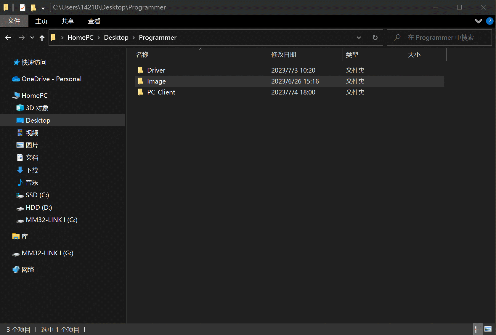
Web Server / 网页服务
首页
SCH / 原理图
Online BOM / 在线 BOM
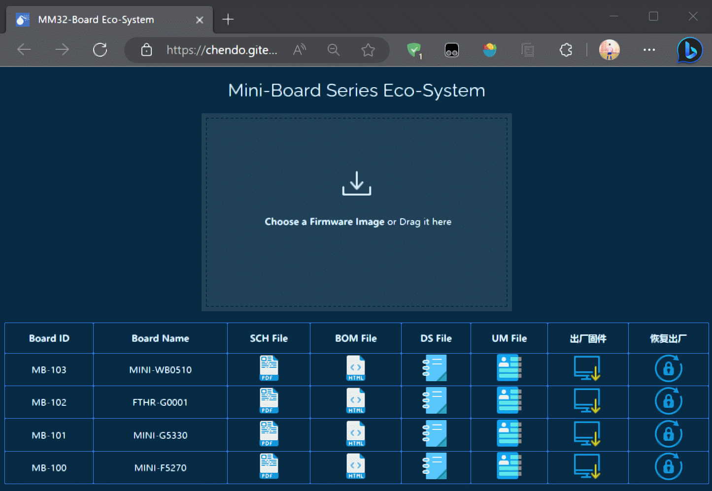
Target MCU Data Sheet / 目标芯片数据手册
Target MCU User Manual / 目标芯片用户手册
Factory Firmware / 出厂固件
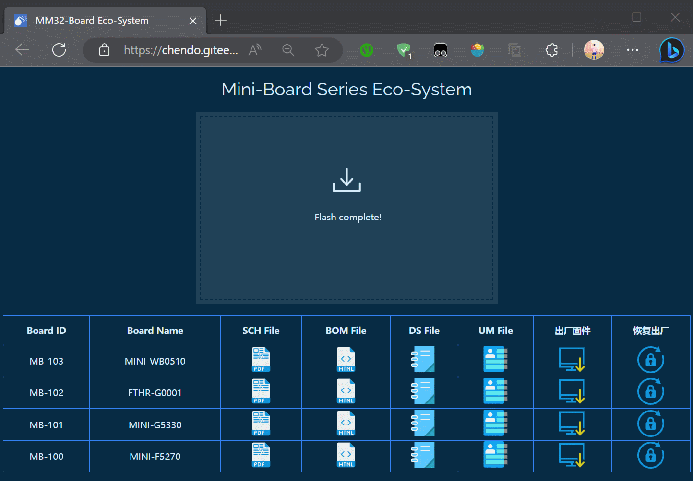
Flash Program / Flash 编程
Factory Reset / 恢复出厂
本文以 MM32G0001 为例，当 SWD 被禁用后，如何通过 Web Server 进行恢复：
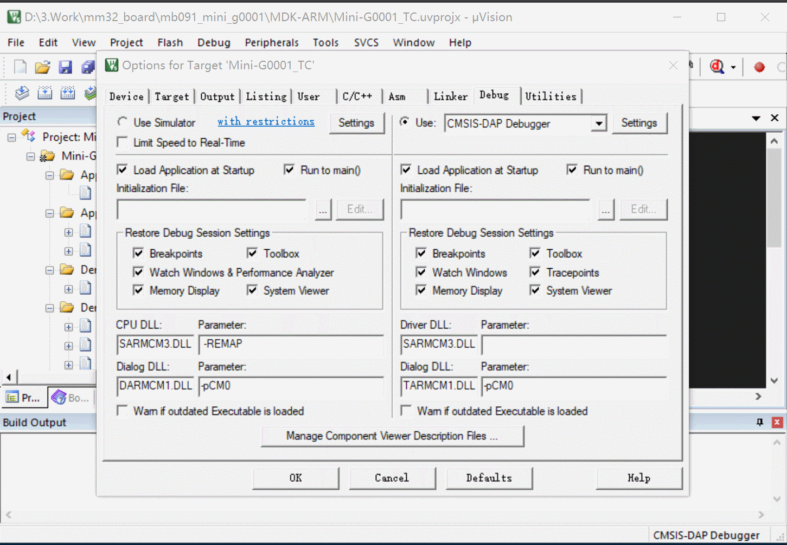
MM32LINK-Utility / 实用工具
MM32LINK-Utility 请从 MM32 官网进行下载：下载地址
本文暂不介绍
FAQ / 常见问题
插电脑上后没有驱动
若连上之后，串口设备名称为 mbed Serial Port，并且无法自动识别WINUSB驱动。则为驱动被污染，解决方法如下：
设备管理器-串口(COM和LPT)-mbed Serial Port(COMxx)-右击-卸载设备，勾选删除此设备的驱动程序软件，点击确定
设备管理器-通用串行总线控制器-mbed开头的一个设备-右击-卸载设备，勾选删除此设备的驱动程序软件，点击确定
点击设备管理器上方的扫描检测硬件改动按钮
设备管理器有设备，但是 IDE 不识别
或与上个问题里一样，用的是假驱动
烧录器连上了，但是KEIL设备列表里不显示被调试的板子
被调试的芯片无法支持较高频率，可以调低频率后再使用
被调试板子关闭了SWD功能
无法识别虚拟U盘
⚠特别警告：安装创新工坊(PWLINK)的驱动后，会导致所有基于ARM官方DAPLINK固件的设备功能异常，包括但不限于：虚拟U盘消失、无法烧录。
连接 DAPLink 到电脑，打开设备管理器，找到如下设备，右击–卸载设备
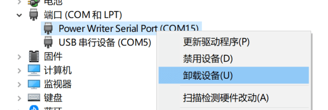
勾选 删除此设备的驱动程序软件，点击确定即可卸载
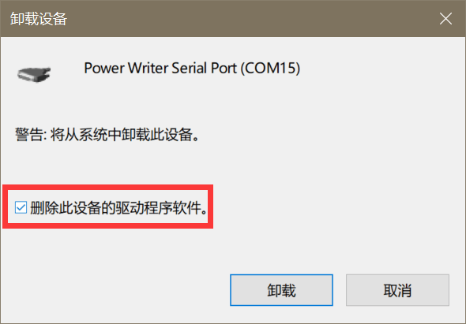
请勿再次安装该驱动，以免设备无法使用
参考资料
[1]. DAPLink Handbook. https://os.mbed.com/handbook/DAPLink
[2]. DAPLink 使用手册. https://wiki.luatos.com/chips/air32f103/daplink.html
[3]. PyOCD 用户指南. https://pyocd.io/
[4]. Zadig USB driver installation made easy 常见问题. https://github.com/pbatard/libwdi/wiki/FAQ#Zadig